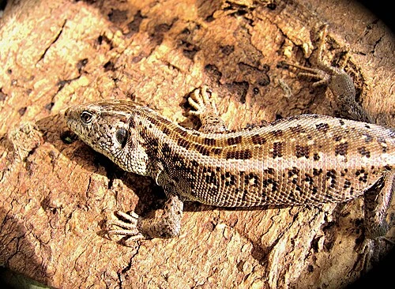

Sandödla

Sandödlan lever i öppna och soliga miljöer i Europa och Asien. Den äter främst insekter och andra små ryggradslösa djur.
Kameleont
Kameleonter är kända för sin förmåga att ändra färg. De lever främst i träd och buskar och använder sin långa tunga för att fånga byten.
Skogsödla
Skogsödlan lever i fuktiga skogsmiljöer i Europa och Asien. Den är en liten ödla som trivs i svalare klimat.